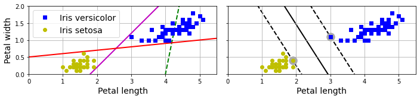
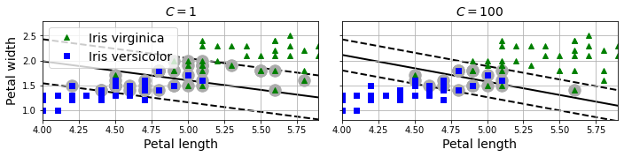
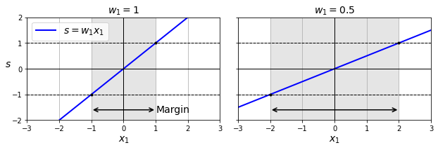
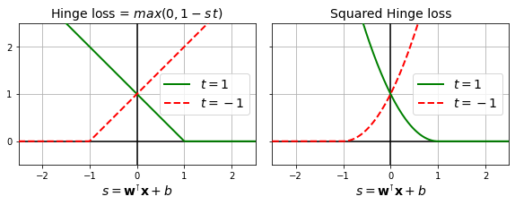

Section 2 — Training Linear Models & Support Vector Machines
Κανόνας πηγών: Το παρόν υλικό είναι απλή ελληνική επεξήγηση μόνο των ανεβασμένων αρχείων DAMA61 ΟΣΣ2, Géron Chapter 4/5, δύο notebooks και δύο απομαγνητοφωνήσεων. Οι τίτλοι και η ομαδοποίηση αποτελούν διδακτική ταξινόμηση της ίδιας ύλης. Δεν προστίθεται νέα θεωρία, νέο dataset ή πρωτότυπη άσκηση.
Ανάγνωση παραπομπών: Η «σελίδα PDF» είναι η θέση στο πραγματικό ανεβασμένο αρχείο. Το «κελί» στο .ipynb αριθμείται από 0, όπως βρίσκεται αποθηκευμένο στη σειρά cells. Οι απομαγνητοφωνήσεις δεν περιλαμβάνουν timestamps και τεκμηριώνονται με γραμμές.
Κώδικας: Παραθέτουμε μόνο πραγματικά αποσπάσματα notebook και εξηγούμε τη σύνδεσή τους με τα προηγούμενα κελιά. Δεν ισχυριζόμαστε νέα εκτέλεση. NOT EXECUTED (νέα εκτέλεση). Αποθηκευμένα outputs του πρωτοτύπου αναγνωρίζονται ρητά ως τέτοια.
Part 6 — Βασικές αρχές και μαθηματικό υπόβαθρο SVM
Μάθημα 16 — Support Vector Machines: η πλατύτερη οδός και τα support vectors
Προαπαιτούμενα από την υπάρχουσα ύλη: Μαθήματα 02, 13.
Από την πηγή — τι διδάσκεται
Τα Support Vector Machines, SVM, στο ξεκίνημα του Chapter 5 παρουσιάζονται ως μοντέλα ταξινόμησης που αναζητούν έναν ιδιαίτερα καθαρό διαχωρισμό ανάμεσα σε κατηγορίες. Ο Géron χρησιμοποιεί το Iris για να δείξει ότι πολλές ευθείες μπορεί να χωρίζουν σωστά τα δεδομένα εκπαίδευσης αλλά να περνούν υπερβολικά κοντά σε κάποια σημεία. Το SVM επιλέγει διαχωριστική ευθεία η οποία διατηρεί όσο το δυνατόν μεγαλύτερο margin, περιθώριο, ανάμεσα στις δύο κατηγορίες.
Ο συγγραφέας και ο διδάσκων χρησιμοποιούν ακριβώς την ίδια εικόνα: σαν να κατασκευάζουμε τον πλατύτερο δυνατό δρόμο ανάμεσα στις δύο ομάδες. Τα παραδείγματα πάνω στα όρια του δρόμου λέγονται support vectors. Αυτά είναι τα κρίσιμα δείγματα που καθορίζουν το σύνορο. Η ΟΣΣ2 ορίζει γραμμική discriminant function, δηλαδή συνάρτηση διάκρισης, και ετικέτες κλάσεων συν και πλην ένα.
Οπτική εξήγηση — πραγματικά σχήματα της πηγής

Αυθεντικό αποθηκευμένο διάγραμμα: 05_support_vector_machines(1).ipynb — κελί 14 (αρίθμηση από το 0). Αναπαράγεται από το υπάρχον output του notebook· NOT EXECUTED εδώ.
Πώς να το διαβάσεις: Στο καλύτερο διαχωριστικό όριο του σχήματος το περιθώριο, δηλαδή ο κενός διάδρομος ανάμεσα στις δύο κατηγορίες, είναι πλατύτερο. Τα σημεία που αγγίζουν τα όριά του είναι support vectors.
Απλή επεξήγηση της ίδιας έννοιας
Το υπερεπίπεδο δεν είναι κάτι διαφορετικό από τη γενίκευση μιας ευθείας σε περισσότερα χαρακτηριστικά. Σε δύο διαστάσεις η οπτική εικόνα είναι ευθεία, σε περισσότερες διαστάσεις χρησιμοποιείται ο όρος hyperplane. Η οριακή γραμμή είναι το σημείο όπου η συνάρτηση απόφασης ισούται με μηδέν. Το πρόσημο καθορίζει την πλευρά στην οποία ανήκει το νέο σημείο.
Τα support vectors είναι σημεία του dataset και όχι ξεχωριστός νέος τύπος μεταβλητών που φτιάξαμε εμείς. Στο γραμμικά διαχωρίσιμο παράδειγμα της πηγής, αλλαγή σημείων μακριά από το περιθώριο δεν αλλάζει το όριο όσο παραμένουν εκτός της περιοχής που το καθορίζει.
Καθοδηγούμενη εξήγηση — ακολουθούμε αργά την ίδια πηγή
Ο Géron παρουσιάζει διάφορες ευθείες που μπορούν να χωρίσουν τις δύο κατηγορίες Iris. Το SVM δεν αρκείται σε μια οποιαδήποτε ευθεία που τυχαίνει να λειτουργεί στα γνωστά σημεία. Προσπαθεί να αφήσει ανάμεσα στις δύο κατηγορίες τον πλατύτερο δυνατό δρόμο. Η εικόνα του δρόμου προέρχεται από το βιβλίο και τη διάλεξη.
Η συνάρτηση διάκρισης γράφεται ως εσωτερικό γινόμενο των βαρών με τα χαρακτηριστικά συν τον σταθερό όρο. Αν η τιμή είναι πάνω από το μηδέν βρισκόμαστε στη μία πλευρά, αν είναι κάτω από το μηδέν στην άλλη. Το μηδέν είναι ακριβώς το όριο απόφασης. Οι ετικέτες συν ένα και μείον ένα είναι η σύμβαση που χρησιμοποιούν οι διαφάνειες.
Τα support vectors είναι τα κρίσιμα σημεία που στηρίζουν τη θέση του δρόμου. Στο σχήμα 5-1 του βιβλίου τα σημεία αυτά κυκλώνονται. Αυτός είναι ο λόγος που το SVM δεν χρειάζεται να δίνει σε κάθε μακρινό σημείο την ίδια βαρύτητα στον καθορισμό του ορίου.
Οι τύποι της πηγής και τι σημαίνουν
Προφορική ανάγνωση και επεξήγηση: Η συνάρτηση διάκρισης είναι το εσωτερικό γινόμενο των βαρών και των χαρακτηριστικών, συν τον σταθερό όρο. Όταν το αποτέλεσμα είναι μηδέν, είμαστε στο διαχωριστικό όριο.
Αριθμητικό παράδειγμα ή εφαρμογή — αποκλειστικά από την πηγή
Υπαρκτό διάγραμμα του βιβλίου: Σχήμα 5-1 συγκρίνει τις αποφάσεις τριών γραμμικών ταξινομητών και το μεγαλύτερο margin του SVM πάνω σε σημεία Iris. Το σχήμα 5-2 δείχνει πώς η κλιμάκωση των χαρακτηριστικών επηρεάζει το περιθώριο.
Περιορισμοί και προσοχή
Η αρχική περιγραφή αφορά τον γραμμικά διαχωρίσιμο δυαδικό ταξινομητή. Τα μη γραμμικά δεδομένα και οι παραβιάσεις margin χρειάζονται επόμενες ενότητες.
Τι κρατώ από το υπάρχον μάθημα
SVM = μεγάλος δρόμος μεταξύ κατηγοριών· support vectors = σημεία που καθορίζουν τα όρια του δρόμου.
Μάθημα 17 — Hard Margin, Soft Margin και ο ρόλος της υπερπαραμέτρου C
Προαπαιτούμενα από την υπάρχουσα ύλη: Μάθημα 16.
Από την πηγή — τι διδάσκεται
Στην Hard Margin Classification απαιτούμε τα παραδείγματα να είναι στη σωστή πλευρά του περιθωρίου και να μην παραβιάζουν τον δρόμο. Το βιβλίο δείχνει δύο πρακτικά προβλήματα: αυτό απαιτεί γραμμικά διαχωρίσιμα δεδομένα και μπορεί να επηρεάζεται έντονα από outliers. Στο σχήμα 5-3 προστίθεται ένα μόνο ακραίο Iris και η γεωμετρία του διαχωρισμού αλλάζει ή γίνεται αδύνατη.
Η Soft Margin Classification επιτρέπει παραβιάσεις. Έτσι αναζητεί ισορροπία ανάμεσα σε μεγάλο δρόμο και περιορισμό των σημείων που μπαίνουν μέσα του ή στη λάθος πλευρά. Η υπερπαράμετρος C καθορίζει πόσο ακριβές θεωρούνται οι παραβιάσεις στη συνάρτηση κόστους. Η αύξηση του C σημαίνει αυστηρότερη τιμωρία τους· η μείωσή του επιτρέπει περισσότερες παραβιάσεις, αλλά μπορεί να οδηγήσει και σε underfitting όταν είναι υπερβολική.
Οπτική εξήγηση — πραγματικά σχήματα της πηγής

Αυθεντικό αποθηκευμένο διάγραμμα: 05_support_vector_machines(1).ipynb — κελί 22 (αρίθμηση από το 0). Αναπαράγεται από το υπάρχον output του notebook· NOT EXECUTED εδώ.
Πώς να το διαβάσεις: Σύγκρινε τα δύο πάνελ που χρησιμοποιούν τα ίδια δεδομένα αλλά διαφορετικό C. Η πηγή εξηγεί ότι το C καθορίζει την αυστηρότητα της ποινής για παραβιάσεις περιθωρίου.
Απλή επεξήγηση της ίδιας έννοιας
Outlier σημαίνει μία παρατήρηση που βρίσκεται ασυνήθιστα σε σχέση με την κύρια διάταξη των δεδομένων. Ο λόγος που η Hard Margin είναι ευαίσθητη γίνεται φανερός στο σχήμα 5-3: ένα σημείο αρκεί για να εμποδίσει την αυστηρά καθαρή διάκριση. Η Soft Margin δεν αγνοεί αυτομάτως το σημείο, αλλά επιτρέπει στο κόστος να διαχειριστεί τη συγκεκριμένη παραβίαση.
Ο Géron επιμένει ότι τα SVM είναι ευαίσθητα στις κλίμακες και χρησιμοποιεί StandardScaler πριν από LinearSVC. Στο notebook εκπαιδεύει Iris virginica με C=1 και κάνει πρόβλεψη σε δύο δοσμένα ζεύγη μετρήσεων πετάλων.
Καθοδηγούμενη εξήγηση — ακολουθούμε αργά την ίδια πηγή
Το Hard Margin απαιτεί καθαρό διαχωρισμό: όλα τα δείγματα πρέπει να βρίσκονται στη σωστή πλευρά και έξω από το περιθώριο. Το ίδιο το βιβλίο δείχνει ότι ένα ακραίο σημείο μπορεί να κάνει αυτή την απαίτηση αδύνατη ή να αναγκάσει το όριο να αλλάξει υπερβολικά. Γι’ αυτό παρουσιάζεται το Soft Margin, το οποίο επιτρέπει παραβιάσεις.
Η παράμετρος C δεν είναι το πλάτος του δρόμου. Ελέγχει πόσο αυστηρά τιμωρούνται οι παραβιάσεις του περιθωρίου. Με μικρότερο C το μοντέλο επιτρέπει περισσότερες παραβιάσεις· με μεγαλύτερο C γίνεται αυστηρότερο. Η πηγή προειδοποιεί ότι υπερβολικά αυστηρή προσαρμογή δεν είναι υποχρεωτικά καλύτερη στα άγνωστα δεδομένα.
Στο πραγματικό Iris παράδειγμα, οι δύο νέες είσοδοι έχουν αποθηκευμένες ταξινομήσεις True και False. Η decision_function εμφανίζει θετικό score περίπου 0.66163411 και αρνητικό περίπου −0.22036063. Αυτοί οι αριθμοί περιγράφουν τη θέση ως προς το όριο απόφασης στο συγκεκριμένο εκπαιδευμένο μοντέλο και δεν είναι αυτομάτως πιθανότητες.
Αριθμητικό παράδειγμα ή εφαρμογή — αποκλειστικά από την πηγή
Πραγματική πρόβλεψη πηγής: Με είσοδο [[5.5,1.7],[5.0,1.5]], το svm_clf.predict δίνει [True, False]. Η decision_function επιστρέφει περίπου [0.66163411,-0.22036063]. Το θετικό και αρνητικό πρόσημο αντιστοιχούν στις δύο πλευρές του ορίου.
Βασική Python από το πραγματικό notebook
Πριν από τον κώδικα: Η διαδικασία και η σειρά των εντολών έχουν οριστεί από τα συγκεκριμένα κελιά του δοσμένου notebook. Δεν δημιουργούμε νέα υλοποίηση.
Ακριβές απόσπασμα του παρεχόμενου 05_support_vector_machines(1).ipynb, κελί 19 (αρίθμηση από 0):
import numpy as np
from sklearn.datasets import load_iris
from sklearn.pipeline import make_pipeline
from sklearn.preprocessing import StandardScaler
from sklearn.svm import LinearSVC
iris = load_iris(as_frame=True)
X = iris.data[["petal length (cm)", "petal width (cm)"]].values
y = (iris.target == 2) # Iris virginica
svm_clf = make_pipeline(StandardScaler(),
LinearSVC(C=1, dual=True, random_state=42))
svm_clf.fit(X, y)Ακριβές απόσπασμα του παρεχόμενου 05_support_vector_machines(1).ipynb, κελί 20 (αρίθμηση από 0):
X_new = [[5.5, 1.7], [5.0, 1.5]]
svm_clf.predict(X_new)Ακριβές απόσπασμα του παρεχόμενου 05_support_vector_machines(1).ipynb, κελί 21 (αρίθμηση από 0):
svm_clf.decision_function(X_new)Επεξήγηση των πραγματικών βημάτων: Κελί 19: εισάγει load_iris, make_pipeline, StandardScaler, LinearSVC, επιλέγει petal length και petal width, δημιουργεί δυαδική ετικέτα virginica, κλιμακώνει και εκπαιδεύει με C=1, dual=True, random_state=42. Κελί 20: διαβάζει κατηγορίες για τα δύο πραγματικά δείγματα. Κελί 21: διαβάζει scores από τη decision_function. Δεν έγιναν αλλαγές στις παραμέτρους της πηγής.
Εκτέλεση: NOT EXECUTED εδώ· οποιαδήποτε αριθμητική έξοδος παραπάνω είναι αποθηκευμένη στο πρωτότυπο notebook.
Διαβάζουμε τον πραγματικό κώδικα γραμμή προς γραμμή
Οι παρακάτω παρατηρήσεις εξηγούν μόνο τις εντολές που υπάρχουν ήδη στα παρατιθέμενα αποσπάσματα. Δεν αποτελούν νέο πρόγραμμα. Για την ακριβή προέλευση κάθε block χρησιμοποιούμε τις ήδη σημειωμένες παραπομπές notebook/κελιού του μαθήματος. Νέα εκτέλεση: NOT EXECUTED.
Απόσπασμα 1, στη σειρά της πηγής: - import numpy as np — Φέρνει στον κώδικα τη βιβλιοθήκη, τη συνάρτηση ή την κλάση που χρησιμοποιείται ήδη σε αυτό το δοσμένο παράδειγμα. - from sklearn.datasets import load_iris — Φέρνει στον κώδικα τη βιβλιοθήκη, τη συνάρτηση ή την κλάση που χρησιμοποιείται ήδη σε αυτό το δοσμένο παράδειγμα. - from sklearn.pipeline import make_pipeline — Φέρνει στον κώδικα τη βιβλιοθήκη, τη συνάρτηση ή την κλάση που χρησιμοποιείται ήδη σε αυτό το δοσμένο παράδειγμα. - from sklearn.preprocessing import StandardScaler — Φέρνει στον κώδικα τη βιβλιοθήκη, τη συνάρτηση ή την κλάση που χρησιμοποιείται ήδη σε αυτό το δοσμένο παράδειγμα. - from sklearn.svm import LinearSVC — Φέρνει στον κώδικα τη βιβλιοθήκη, τη συνάρτηση ή την κλάση που χρησιμοποιείται ήδη σε αυτό το δοσμένο παράδειγμα. - iris = load_iris(as_frame=True) — Φορτώνει το δοσμένο Iris dataset από την κλάση της πηγής. - X = iris.data[["petal length (cm)", "petal width (cm)"]].values — Επιλέγει συγκεκριμένα αρχικά χαρακτηριστικά του Iris, ακριβώς όπως ορίζει ο συγγραφέας. - y = (iris.target == 2) # Iris virginica — Ορίζει τις πραγματικές ετικέτες των λουλουδιών από το Iris, σύμφωνα με το ερώτημα ταξινόμησης του παραδείγματος. - svm_clf = make_pipeline(StandardScaler(), — Συνδέει τα επιμέρους βήματα στην ακριβή σειρά με την οποία τα εκτελεί η πηγή. - LinearSVC(C=1, dual=True, random_state=42)) — Ορίζει τον γραμμικό ταξινομητή SVM και τις δοσμένες τιμές των υπερπαραμέτρων του. - svm_clf.fit(X, y) — Εκπαιδεύει το ήδη ορισμένο μοντέλο στα συγκεκριμένα χαρακτηριστικά και τις γνωστές εξόδους. Απόσπασμα 2, στη σειρά της πηγής: - X_new = [[5.5, 1.7], [5.0, 1.5]] — Ορίζει ακριβώς τις γνωστές εισόδους, εξόδους ή νέες τιμές του παραδείγματος από την παρεχόμενη πηγή. - svm_clf.predict(X_new) — Ζητά πρόβλεψη από το ήδη εκπαιδευμένο μοντέλο για τις τιμές εισόδου του βιβλίου. Απόσπασμα 3, στη σειρά της πηγής: - svm_clf.decision_function(X_new) — Επιστρέφει scores απόφασης, τα οποία δεν είναι αυτομάτως πιθανότητες.
Περιορισμοί και προσοχή
Τα scores της decision_function δεν είναι αυτομάτως πιθανότητες. Το βιβλίο περιγράφει επιπλέον ρύθμιση SVC(probability=True) αν ζητούνται πιθανότητες, με επιπλέον κόστος εκπαίδευσης.
Τι κρατώ από το υπάρχον μάθημα
Hard Margin: μηδενική ανοχή παραβιάσεων· Soft Margin: συμβιβασμός· μικρό C = περισσότερη ανοχή.
Μάθημα 18 — Primal, Dual, Margin, περιορισμοί και KKT
Προαπαιτούμενα από την υπάρχουσα ύλη: Μαθήματα 03–04, 16–17· βασική ανάγνωση περιορισμών.
Από την πηγή — τι διδάσκεται
Η ΟΣΣ2 εξηγεί το μαθηματικό υπόβαθρο του SVM μέσω προβλήματος βελτιστοποίησης με περιορισμούς. Για τις ετικέτες με τιμές συν και πλην ένα, απαιτούμε το γινόμενο ετικέτας επί τιμή διαχωριστικής συνάρτησης να είναι τουλάχιστον ένα. Έτσι τα δείγματα βρίσκονται έξω από τη ζώνη των οριακών τιμών συν και πλην ένα. Με αυτή την κανονικοποίηση, το πλάτος του περιθωρίου είναι δύο δια το μέτρο του διανύσματος βαρών.
Το αρχικό, primal πρόβλημα αναζητεί απευθείας τα βάρη και τον σταθερό όρο. Το σχετικό dual πρόβλημα χρησιμοποιεί πολλαπλασιαστές Lagrange, έναν για κάθε περιορισμό εκπαίδευσης. Η ΟΣΣ2 παραθέτει επίσης τις συνθήκες KKT, οι οποίες συνδέουν τους πολλαπλασιαστές με την ενεργοποίηση των περιορισμών. Ο διδάσκων τονίζει ότι η διάλεξη δεν απαιτεί πλήρη ανάπτυξη προχωρημένης βελτιστοποίησης.
Οπτική εξήγηση — πραγματικά σχήματα της πηγής

Αυθεντικό αποθηκευμένο διάγραμμα: 05_support_vector_machines(1).ipynb — κελί 41 (αρίθμηση από το 0). Αναπαράγεται από το υπάρχον output του notebook· NOT EXECUTED εδώ.
Πώς να το διαβάσεις: Στον οριζόντιο άξονα έχεις ένα χαρακτηριστικό. Οι γραμμές αναπαριστούν το score και τις περιοχές περιθωρίου για συγκεκριμένα w.

Αυθεντικό αποθηκευμένο διάγραμμα: 05_support_vector_machines(1).ipynb — κελί 42 (αρίθμηση από το 0). Αναπαράγεται από το υπάρχον output του notebook· NOT EXECUTED εδώ.
Πώς να το διαβάσεις: Η hinge loss δεν τιμωρεί με τον ίδιο τρόπο κάθε score. Παρατήρησε σε ποιες περιοχές η ποινή γίνεται μηδέν και πού ανεβαίνει, όπως στο αρχικό notebook.
Απλή επεξήγηση της ίδιας έννοιας
Για να καταλάβεις το ζητούμενο, κράτησε την αλληλουχία της ίδιας πηγής: θέλουμε πλατύ δρόμο, άρα μειώνουμε το μέγεθος των βαρών, αλλά ταυτόχρονα επιβάλλουμε κάθε παράδειγμα να βρίσκεται στη σωστή πλευρά του περιθωρίου. Οι συνθήκες της βελτιστοποίησης είναι οι μαθηματικοί κανόνες που οργανώνουν αυτές τις δύο απαιτήσεις.
Στο dual πρόβλημα, σημαντικοί γίνονται οι πολλαπλασιαστές των support vectors. Για το γραμμικό SVM, το βιβλίο συνδέει τα βάρη με άθροισμα των διανυσμάτων των training samples, σταθμισμένο με τις ετικέτες και τους πολλαπλασιαστές τους. Το γεγονός αυτό εξηγεί τον ρόλο των support vectors στον κανόνα απόφασης.
Καθοδηγούμενη εξήγηση — ακολουθούμε αργά την ίδια πηγή
Το μαθηματικό μέρος του SVM συνεχίζει την εικόνα του δρόμου. Ο Géron δείχνει ότι, όταν τα όρια του περιθωρίου ορίζονται στις τιμές μείον ένα και συν ένα της συνάρτησης διάκρισης, το πλάτος είναι δύο δια το μέγεθος του διανύσματος βαρών. Άρα για μεγαλύτερο περιθώριο αναζητούμε μικρότερο μέγεθος βαρών, με τους σωστούς περιορισμούς ταξινόμησης.
Στο αυθεντικό γεωμετρικό παράδειγμα του σχήματος 5-12, βάρος ένα δίνει όρια στο μείον ένα και στο συν ένα, δηλαδή πλάτος δύο. Όταν το βάρος είναι μισό, τα όρια μεταφέρονται στο μείον δύο και στο συν δύο, οπότε το πλάτος γίνεται τέσσερα. Εδώ δεν επινοείται νέος αριθμός: διαβάζουμε το παράδειγμα του Géron.
Το primal χρησιμοποιεί τα βάρη ως αγνώστους και το dual τους πολλαπλασιαστές Lagrange. Οι συνθήκες KKT εμφανίζονται στην ΟΣΣ2 και στη διάλεξη, αλλά ο διδάσκων λέει ότι δεν θα αναπτύξει ολόκληρη την ειδική θεωρία βελτιστοποίησης. Επομένως κρατάμε τη διατύπωση και τη σύνδεσή της με τα support vectors, όχι μια επινοημένη νέα απόδειξη.
Οι τύποι της πηγής και τι σημαίνουν
Προφορική ανάγνωση και επεξήγηση: Το περιθώριο είναι δύο δια το μέτρο των βαρών. Το primal πρόβλημα ελαχιστοποιεί το μισό τετράγωνο του μέτρου των βαρών, υπό τον όρο ότι κάθε ετικέτα επί την τιμή διάκρισης είναι τουλάχιστον ένα. Στο dual, τα βάρη προκύπτουν ως σταθμισμένο άθροισμα των διανυσμάτων εκπαίδευσης.
Αριθμητικό παράδειγμα ή εφαρμογή — αποκλειστικά από την πηγή
Υπαρκτό γεωμετρικό παράδειγμα βιβλίου: Στο σχήμα 5-12, όταν ένα μονοδιάστατο βάρος μειώνεται από 1 σε 0.5, το πλάτος της οδού που παρουσιάζεται αυξάνεται από 2 σε 4. Η συγκεκριμένη αλλαγή δείχνει γιατί η ελαχιστοποίηση του μεγέθους των βαρών αυξάνει το περιθώριο.
Ο γεωμετρικός υπολογισμός του περιθωρίου που έχει το βιβλίο
Ο Géron εξηγεί τη σχέση ανάμεσα στο βάρος και στο πλάτος του δρόμου στην απλή διάσταση του σχήματος 5-12. Με βάρος , οι δύο πλευρές του δρόμου βρίσκονται στις θέσεις και , οπότε το πλάτος είναι 2. Με βάρος , τα αντίστοιχα όρια μεταφέρονται στις θέσεις και , οπότε το πλάτος είναι 4. Δεν αλλάξαμε το παράδειγμα: τα δύο ζεύγη τιμών προέρχονται από την ίδια σελίδα του βιβλίου.
Αυτή είναι η συγκεκριμένη γεωμετρική αιτία της σχέσης ανάμεσα σε μικρότερο μέτρο και μεγαλύτερο margin. Η απλοποιημένη εικόνα οδηγεί στη διατύπωση του προβλήματος, όχι σε νέα αριθμητική τεχνική. Πηγή: Géron, Chapter 5 — Under the Hood of Linear SVM Classifiers, σελ. PDF 9, σχήμα 5-12.
Περιορισμοί και προσοχή
Δεν έχει παρασχεθεί ξεχωριστό εισαγωγικό μαθηματικό μάθημα Lagrange/KKT. Δεν συμπληρώνουμε εξωτερική πλήρη απόδειξη. Στην απομαγνητοφώνηση υπάρχει ανακριβής διατύπωση για dual bounds· για το σημείο αυτό ακολουθείται το Géron, σελ. PDF 10–11.
Τι κρατώ από το υπάρχον μάθημα
Primal: υπολογίζουμε βάρη. Dual: υπολογίζουμε πολλαπλασιαστές. Τα support vectors αντιστοιχούν σε ενεργούς περιορισμούς.